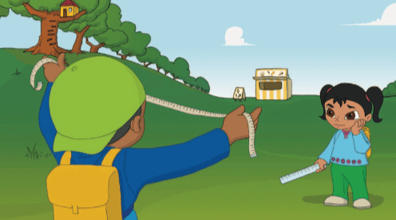
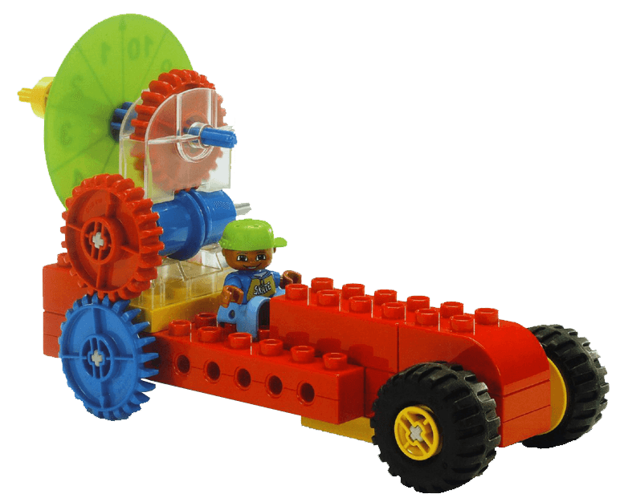
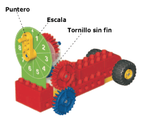
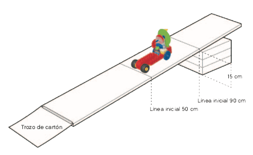
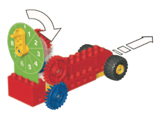
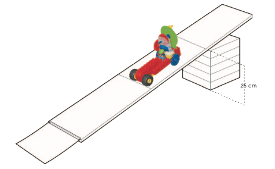

Después de un día de medidas en la escuela, Sam y Sara han intentado medir casi todo camino a casa. Cuando
llegan a su zona de juegos favorita, Sam se pregunta que distancia hay desde la casa del árbol hasta la
heladería.
Sam dice que no parece estar lejos de donde están. Sam estira una cinta métrica y quiere empezar a medir,
pero Sara cree que tiene que existir una forma mucho mejor de medir la distancia.
¿Puedes ayudar a Sam y Sara a construir un carro que mida la distancia recorrida? ¡Veamos cómo se hace!

• Las ruedas deben poder girar libremente y sin rozar con los bordes del coche
• Cuando giran las ruedas del engranaje azul, el puntero también debe moverse
• El puntero no debe frotar contra la escala

• Traza una línea inicial a 90 cm y después otra línea inicial a 50 cm desde un extremo de la plancha
• Coloca un soporte de forma que la línea inicial superior se encuentre a 15 cm del suelo

• La escala está dividida en 10 unidades y se puede utilizar para realizar medidas no estándar
• Empuja el coche de medida hacia delante
• Observa que cuando el coche de medida se mueve hacia delante, el puntero gira
• El puntero apuntará hacia la escala y te dará una lectura de la distancia (unidades) que el carro de medida
ha recorrido hacia delante

Idea:
Si el grosor de la plancha es demasiado grande y los coches chocan contra suelo, utiliza un trozo de papel o
cartulina y cinta adhesiva para lograr una transición suave de la plancha al suelo.
Utilizando la escala puedes medir la distancia que recorre el coche de medida. Averigua lo lejos que llegará
el coche de medida al desplazarse hacia abajo desde las dos líneas iniciales diferentes.
Predice primero cuánta distancia recorrerá el coche de medida desde las dos líneas iniciales. Marca tus
predicciones utilizando la escala y los números de la hoja de trabajo.
A continuación, prueba cuánto se desplaza el coche de medida en realidad desde las dos lineas iniciales
leyendo la escala. Marca tus hallazgos utilizando la escala y los numeros de la hoja de trabajo.

• ¿Qué has predicho que ocurriria y por qué?
• Describe lo que ha ocurrido.
• ¿Cómo te aseguraste de que tus pruebas fuesen imparciales?
¿Has empezado siempre en el mismo lugar?
¿Has empujado el carro de medida cuando empezaba a descender por la rampa?
¿Has puesto el puntero a cero después de cada prueba?
• Describe cómo funciona el modelo.
Sugerencia:
Recuerda poner el puntero a cero después de cada prueba girando las ruedas del engranaje azul hasta que el
puntero esté en la parte superior de la escala.
Fabrica tu rampa de pruebas con 25 cm de altura y prueba como afecta el cambio a la distancia que recorre el
coche de medida.
Averigua lo lejos que llegara el carro de medida al desplazarse hacia abajo desde las dos líneas iniciales diferentes.

Predice primero qué distancia recorrera el coche de medida desde las dos líneas iniciales.
Marca tus predicciones utilizando la escala y los números de la hoja de trabajo.
A continuación, comprueba cuánto se desplaza el coche de medida en realidad desde las dos líneas iniciales
leyendo la escala.
Marca tus hallazgos utilizando la escala y los números de la hoja de trabajo.